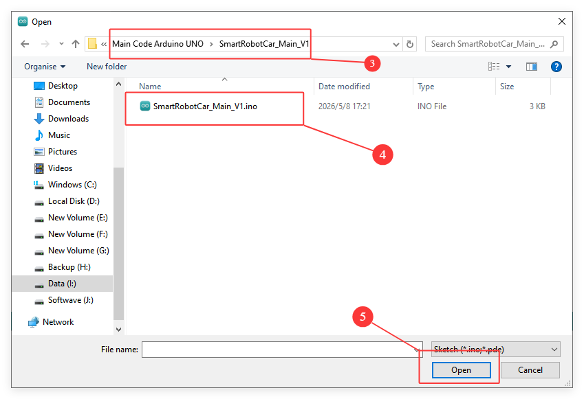
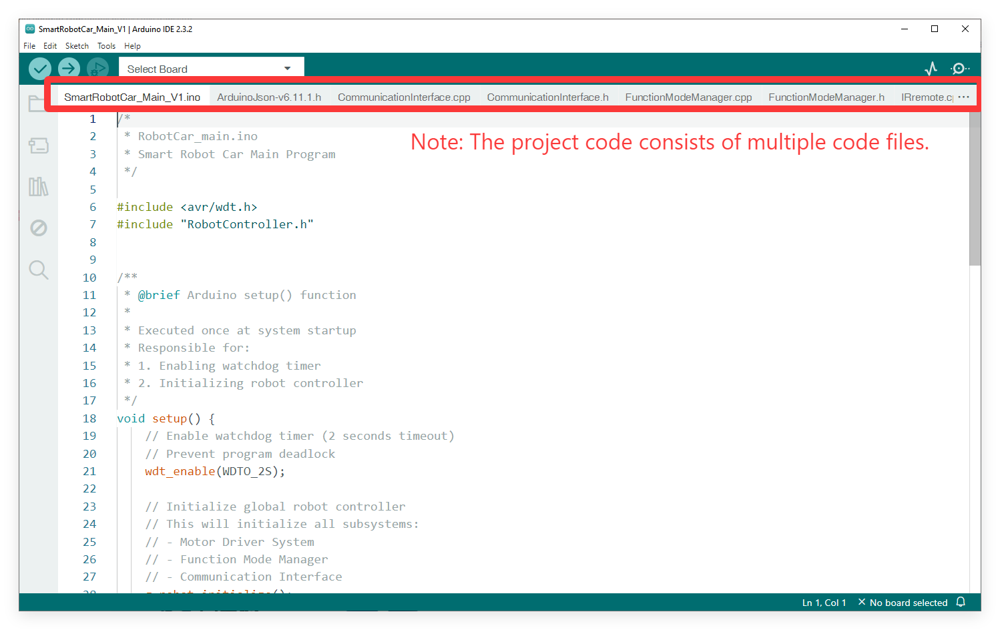
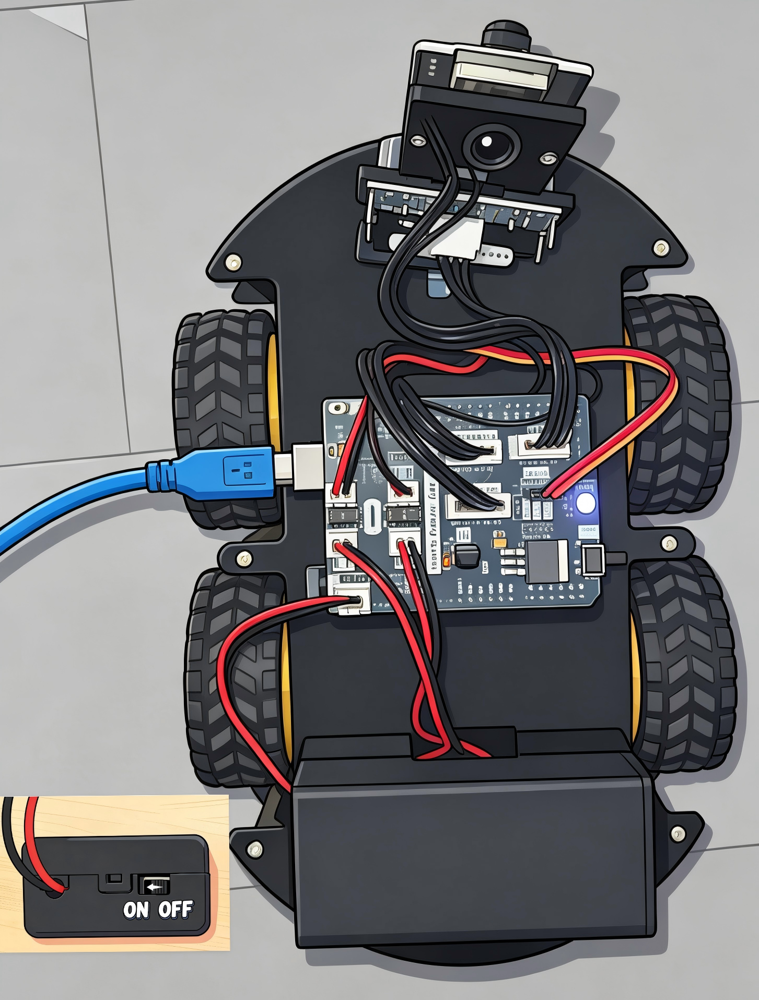
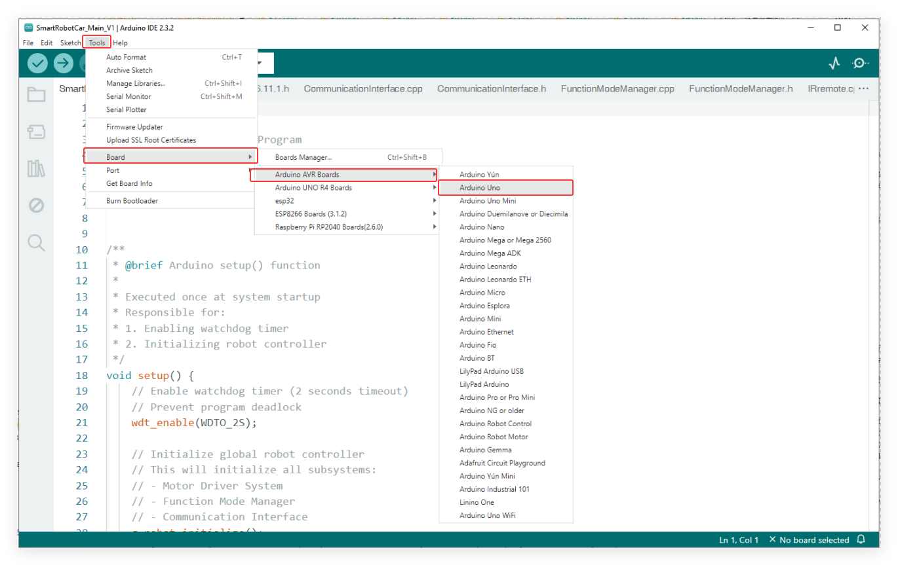
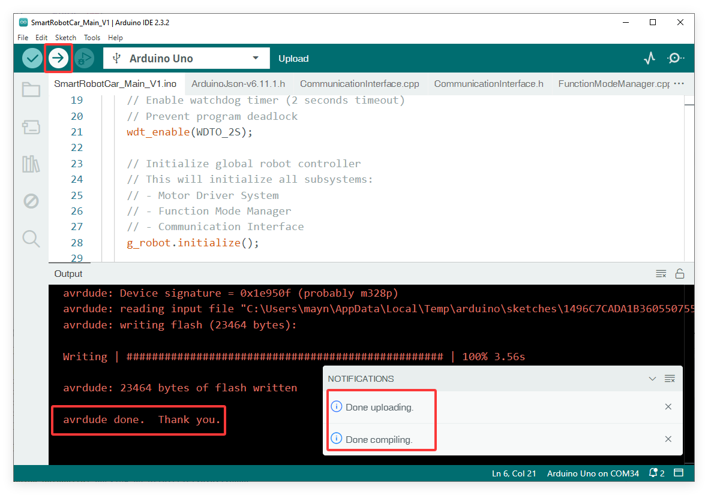

Upload Program to Arduino UNO Board
This section provides detailed instructions on how to upload the main program to the Arduino UNO Board.
Step 1: Install Arduino IDE
Go to https://www.arduino.cc/en/Main/Software and you will see the following page.
The version available at this website is usually the latest version, and the actual version may be newer than the version in the picture.
If you have already installed the Arduino IDE, you can skip this step and continue to the next step.

Step 2: Install CH340 Driver
If your computer can detect the USB-SERIAL CH340 port, it means the CH340 driver is already installed on your system, and you can skip this step directly.

If your computer does not automatically recognize the board(as shown in the picture), you may need to install the CH340 driver.

Follow the steps below to install the CH340 driver:
①: Downloading the driver
First, download the CH340 driver from the this link. Windows CH340 Driver
You can also download the latest version of the driver directly from the manufacturer’s site

②: Installing the driver
After downloading the driver, open it and click Install.
Note
Tip: Before installing the driver software, you must connect the Arduino board to your computer with a USB cable.

After successful installation you should see this message

Note：In some cases, you may need to reset Windows after the driver installation is complete.
③: Checking Correct Driver Installation in Device Manager
If your driver has been installed correctly, and you connect your board to your computer, you will see its name and port number listed in the Ports section of Device Manager. For example, your Arduino board may show up as connected to COM28.
④: Verify Installation in the Arduino IDE
Open the Arduino IDE -> Tools -> Port -> COM28. This ensures the IDE communicates with your Arduino board correctly.

If you can’t find the CH340 device in Device Manager or Arduino IDE, the driver installation failed. Try uninstalling the driver, restarting your computer, and repeating the steps above.

Step 3: Upload Arduino UNO Main Code
① Load Main code into the Arduino IDE
Launch the Arduino IDE and navigate to File -> Open… in the menu bar, then locate and select the main program `SmartRobotCar_Main_V1.ino` from your downloaded resource folder.

{kind=link}

{kind=link}

② Connect the Arduino UNO Board to Your Computer
Connect the Arduino UNO Board on the Smart Robot Car to your computer using the provided USB Type B cable.
Ensure the power switch on the Smart Robot Car is turned on.
{kind=link}

③ Configure the Board and Port
Go to Tools -> Board and select Arduino Uno.
Go to Tools -> Port and select the COM port that corresponds to your connected Arduino board.
{kind=link}


④ Upload the Code
Click the Upload button (the right-pointing arrow icon) located in the top-left corner of the Arduino IDE.
Wait for the IDE to compile and upload the sketch.
You should see a “Done uploading” message at the bottom of the IDE window when it is successful.
{kind=link}
